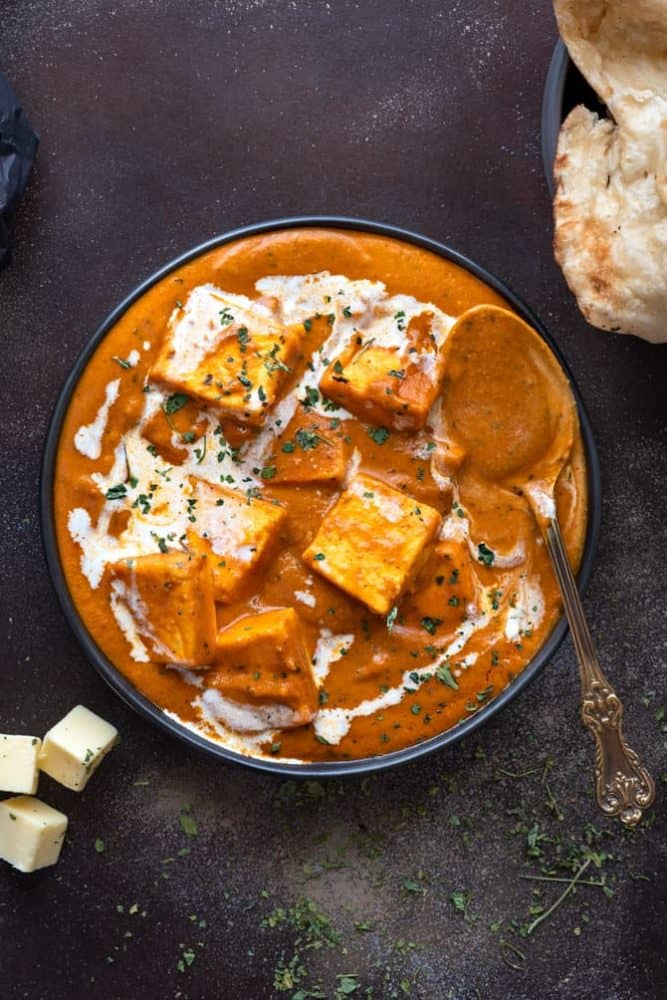

Paneer Recipe

Description
Paneer Butter Masala is an Indian dish, very popular and tasty with gravy and people love it all over the world.
Ingredients:
- Paneer chopped cubes
- Paneer Butter Masala
- Butter
- Curry leaves
- Red Chilly Powder
- Tomatoes
- Cream
- Salt
- Onions
- Cooking Oil
Steps:
- Chop Onions and tomatoes and grind them to make a purry
- Put oil in the frying pan and let it get warm, put masalas and tomatoes, onions, curry leaves and other stuff
- Add chopped paneer and stirr for 5 minutes
- Add cream
- Your Paneer Butter Masala is Ready